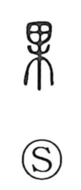

果

Kun: hatasu, hateru, hate | On: ka
fruit ・ result ・ to accomplish ・ to end
Explanation
果 pictures fruit growing on a tree. 木 forms the trunk and branches, with the fruit drawn prominently above. Its first meaning is the fruit or nut itself.
The fruit is what develops after flowering, so it also represents growth brought to fulfilment. From this come a result, an outcome, and the act of accomplishing or bringing something to an end. The ordinary fruit and the abstract result share the same place in a process: what the preceding growth or effort finally produces.